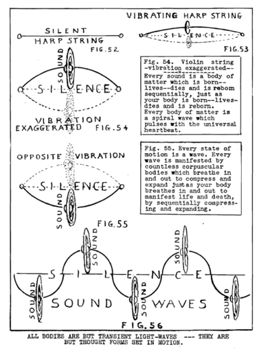
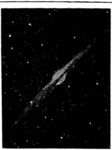

Part VII (Lessons 25–28): Simplicity, Sound, Silence & Wave-Vibrations¶
Lesson 25: We Still Search for Simplicity
We live in a bewildering world which confuses us only because we do not know it. A primate would be similarly confused about a watch. To him its wheels would have no meaning because both the mechanics and purpose of the watch would be incomprehensible to him.

Lesson 26: Sound, Silence and Wave-Vibrations
We will again consider the making of bodies which appear and disappear to LIVE and DIE from another point of view. Let me recall, as heretofore stated, that all that God does is to make bodies to manifest His all-knowing. Also I stated that that is all you likewise do.

Lesson 27: Preface to Vibration, Nebulae & Faith
We have now reached the stage where the new idea given in Lesson 11 can be enlarged upon to vastly aid you in removing all limitations from your life by making you KNOW how you can build it to any heights of power you desire without being handicapped by the lack of knowledge from which doubts, fears, pessimism and other negative effects retard your growth. Please re-study lesson No. 11 from page 180 and build this lesson upon it.
Lesson 28: Questions on Faith, Belief and Faith Healing
So many questions have come to us from various sources which are so unlike the workings of Natural Law and God’s ways of working that they might appropriately belong to the Middle Ages.